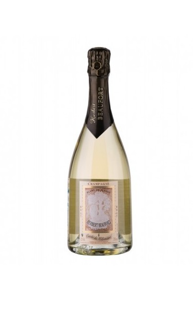

BRUT CUVEE DU MELOMANE GRAND CRU
Vitigno: 100% Chardonnay
Cantina: Herbert Beaufort
Gradi: 12°
Colore: Oro con leggeri riflessi verdognoli
Affinamento: L'affinamento deve essere lungo e lento in modo da formare bollicine persistenti, numerose e dalla grana fine per un periodo di affinamento dai 18 mesi per i non millesimati e fino ai 33 dei millesimati
Profumo: Al naso rivela subito una grande complessità, con note di mandorle fresche, brioche tostate, burro, agrumi e frutta secca
Abbinamento: Aperitivi e piatti a base di pesce
Descrizione: «Questo Puro Chardonnay Champagne possiede un colore giallo verdognolo (oro-verde), bollicine delicate, una spuma fine e persistente»